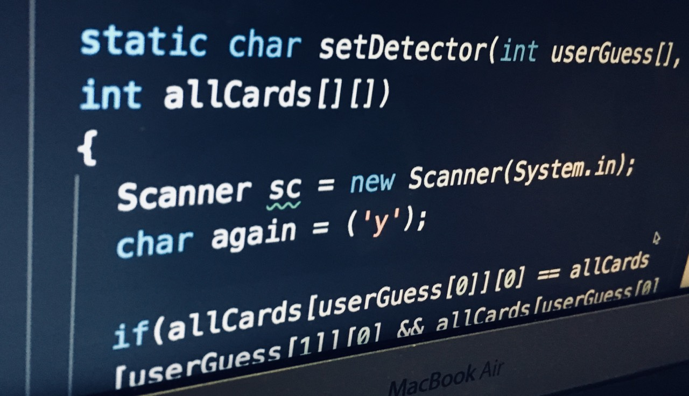

2. POST TEMPLATE. We’re working on a simple post page in html and css. On the master branch it’s design.html
3. POST CONTENT. I’m putting together some sample content by next week. I’m thinking at a minimum each post should have A. an IMAGE. I think a super zoomed in screenshot of part of your code is an acceptable fallback. See the example in design.html B. some CODE. Embed from Repl.it if possible C. COMMENTARY on the code a. Briefly DESCRIBE your program: What were your goals with the program? Anything significant about the context of making your program? b. What were the CHALLENGES of making this program? How did you overcome them? [Include at least three interesting details and whenever possible mention techniques you learned in class (e.g. learned grep in CS 160A). Get technical but try to explain for an audience that doesn’t necessarily know how to program] c. PERSONAL REACTION like you feel about it, what was fun or surprising about it—something that makes it different from a homework assignment
4. BLOG HOME PAGE. This will be the page (not necessarily the home/landing page) that has previews and links to all the posts. It will be designed and automated after we have a few post pages to work with